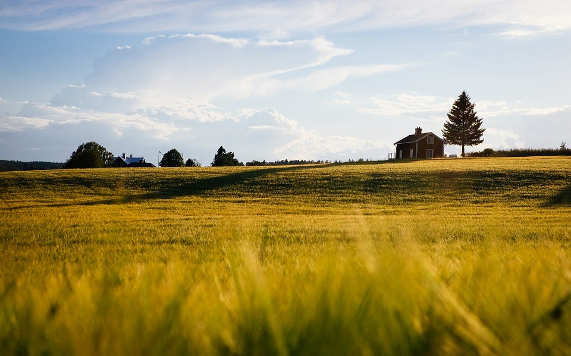
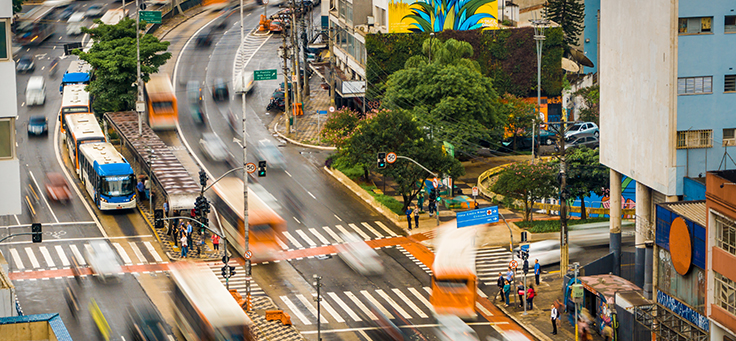

Vida no Campo
No meio da agitação das grandes cidades e centros urbanos, muitas pessoas sonham em trocar o concreto pelo verde, os ruídos do trânsito pelo canto dos pássaros. Com base nisso, vejamos alguns benefícios de se moarar no campo:
- Saúde e Bem-Estar: Morar no campo permite uma interação diária com a natureza. O ar mais puro, a ausência de barulho de carros e a proximidade com a luz solar contribuem para uma saúde física e mental melhor.
- Menos Estresse e Poluição: No campo, o ritmo é diferente. Não há aquela pressa incessante, e a poluição é bem menor.
- Autossuficiência: Cultivar seus próprios alimentos, cuidar de animais e plantas, e até mesmo construir sua própria casa são possibilidades reais no campo.
- Reconexão com as Raízes: Muitos veem o campo como uma oportunidade de voltar às origens, de se reconectar com a terra e com suas raízes culturais.
Maravilhas Naturais
As Maravilhas Naturais estão em todo lugar, como exemplos temos:
- Amazônia: Com sua diversidade de fauna, flora e rios majestosos, a Amazônia é um dos ecossistemas mais ricos e vitais do planeta.
- Baía de Ha Long, Vietnã: São picos de calcário emergindo das águas verdes, grutas misteriosas e ilhotas pontilhando o horizonte.
- Ilha de Jeju, Coreia do Sul: É um paraíso vulcânico. Praias de areia negra, cavernas exuberantes e formações rochosas únicas fazem dessa ilha um lugar especial.
- Cataratas do Iguaçu, Brasil e Argentina: A fronteira entre Brasil e Argentina abriga um espetáculo de água: as Cataratas do Iguaçu. Imagine centenas de quedas d’água rugindo em harmonia, criando uma nuvem de vapor e um arco-íris constante.
Vibrante Vida Urbana
A vida nas cidades possuem altos e baixos, com isso temos vários pontos positivos, como exemplos, Transporte público, Oportunidades de empregos, Pontos turísticos, entre outos. Mais também posuui pontos negativos, que podem ser:
- Custos Elevados da Habitação: Morar na cidade pode ser caro. Os preços dos imóveis são altos, e encontrar habitação acessível é um desafio.
- Espaço Pessoal Limitado: Aglomeração é a palavra de ordem. As cidades são cheias e movimentadas.
- Poluição e Ruído: O trânsito, a poluição sonora e a atmosférica podem afetar sua qualidade de vida.
- Preocupações Ambientais: As cidades consomem muitos recursos naturais que geram resíduos, e também á o descarte incorreto do lixo.